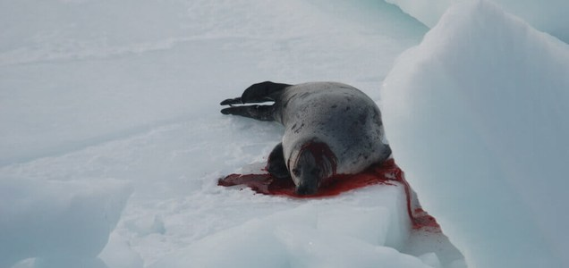

Our eco-system is comprised of interdependent animals and plants which constitute a complex web of life, where the extinction of a single species may affect the whole biological system pertaining to life and living things. Unfortunately the unprecedented unnatural extinction of many marine species including marine mammals, sea turtles and salmonids has not only endangered functioning of the ecosystem but also affected the ecological issues by large extent. The reasons for this threat to marine life are varied but mostly due to irrational human behaviour and activities.
Dolphin Hunts - Focus on Taiji, Japan
The captivity industry is helping to keep Japanese drive hunts alive Over 1000 dolphins are killed annually in drive hunts in Taiji Japan excludes whales and dolphins from most protective legislation Some 20,000 dolphins and small whales die in Japan every year New killing methods are contributing to the increased suffering of dolphins in these hunts This devastatingly cruel practice involves the herding of dolphins at sea and driving and corralling them into the confines of the cove in Taiji.
Internal pressure on EU to take more action over Japanese whale slaughter
29 March 2016 - 2:11pm Following pressure from a group of MEPs, the EU Parliament´s Committee on the Environment, Public Health and Food Safety (ENVI) has submitted a formal question to the European Commission and European Council asking if there will be any further condemnation of Japan by the EU over the Japanese government's decision to resume research whale hunts in Antarctic waters over the next 12 years.
Canadian Seal Slaughter
Each year, the Canadian government gives hunters the green light to bludgeon to death hundreds of thousands of baby harp seals. During the slaughter, baby seals are shot or repeatedly clubbed. Sealers bludgeon the animals with clubs and "hakapiks" (metal-hook-tipped clubs) and drag the seals -who are often still conscious-across the ice floes with boat hooks.
Sea Shepherd releases confronting anti-whaling statement - video
Marine conservation group Sea Shepherd has released an anti-whaling video starring actor David Field. He plays a man who is shot in the back by a harpoon before being dragged to his death. Since the 1982 moratorium on commercial whaling, more than 25,000 whales have been killed, says Sea Shepherd
More Pilot Whales Killed on the Faroe Islands
By MarEx 2015-12-01 16:29:01 Yesterday, a pod of 11 pilot whales was slaughtered at the killing beach of Fuglafirði in the Faroe Islands. It is the sixth grindadráp in the archipelago this year, and brings the total amount of pilot whales slaughtered in the 2015 drive hunts to 501.